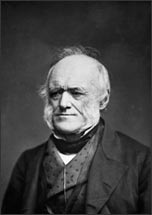

Sir Charles Lyell
1797–1875
Charles Lyell, the oldest of 10 children, was born in Scotland. His father was a well-known botanist and literary translator. Lyell originally intended to become a lawyer, but his passion for the natural world—and particularly geology changed his mind. After completing his studies in law at Oxford University and working briefly as an attorney, he helped conduct geologic surveys for a new map of Scotland. He then traveled extensively, observing geological formations first in Europe and then in the United States and trying to figure out how these formations had developed.
In 1829, Lyell published the first volume of his controversial Principles of Geology, in which he argued that Earth's surface had been shaped by relatively small geological changes occurring gradually over a long period of time. This idea (known as uniformitarianism) was not entirely new. Uniformitarianism had first been proposed by another scientist, James Hutton—but it was Lyell's book that helped the theory gain popular acceptance. He pointed to volcanoes, erosion, and rock formation as observable examples of processes that had been shaping Earth for millions of years.
Lyell's work had a profound influence on his friend, Charles Darwin—although Lyell was slow to accept the idea of evolution. He was knighted in 1848 by Queen Victoria. When he passed away in 1875, he was honored by being buried in Westminster Abbey. Today he is known as the father of modern geology.